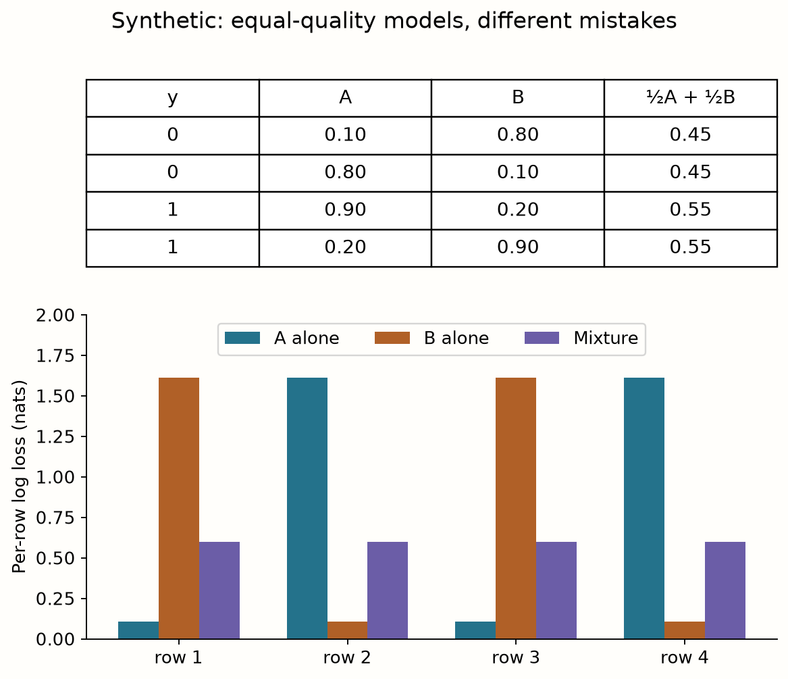
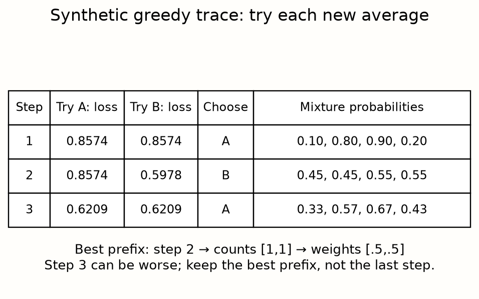
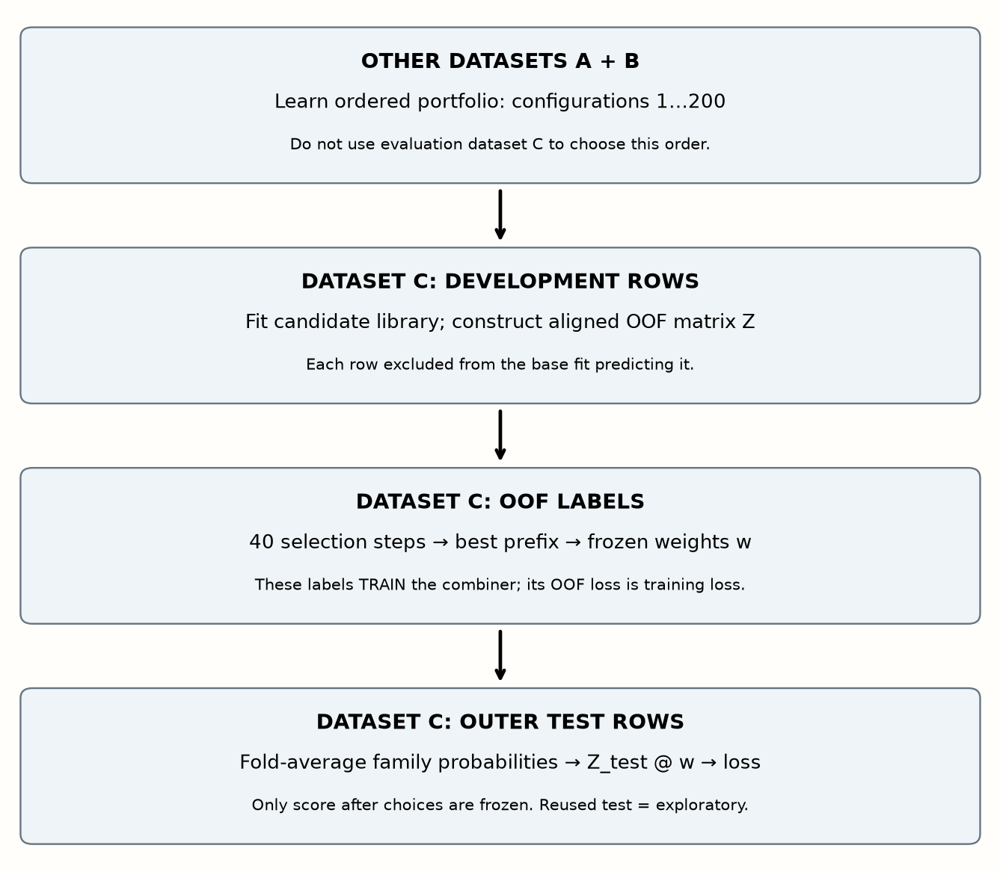
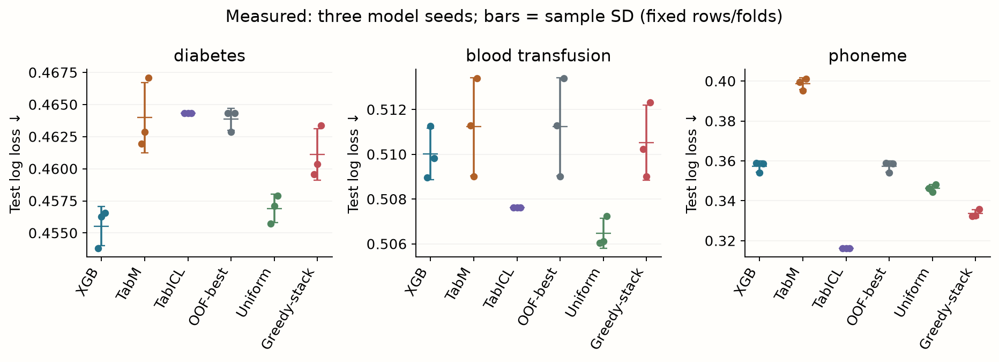
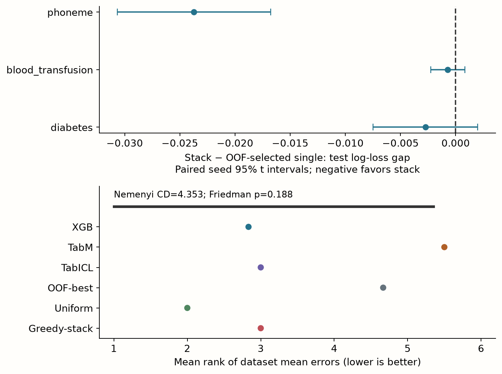

Year 2 · Quarter 2 · Lesson 057
Build the ensemble you would trust
An OOF stack across trees, TabM and a pretrained TabICL baseline.
Your win: construct predictions whose rows were excluded from base-model fitting, learn a convex combiner, and evaluate its gain against a single model selected without test labels. The relational thesis must clear this stronger single-table baseline. It does not get credit for beating an unnecessarily weak individual model.
Route: retrieval → one numerical trace → OOF implementation → three-dataset audit → family removal → EXIT. Core reading: 40–55 minutes; lab: 45–60 minutes plus optional fresh three-family training. The ensemble procedure is new; TabM reuses corrected L054 v2, and TabICL is an explicitly PROVIDED pretrained inference baseline. Its architecture and pretraining are taught later in the foundation-model sequence.
1. Retrieve before input
Without notes, answer: What can validation select? Why do nine folds not make nine independent datasets? How does TabM average its members for classification? Write first, then reveal.
Check your recall
Validation may choose recipes, epochs and ensemble weights; outer-test labels evaluate the resulting choices. Folds from one dataset share a population and overlapping training rows. TabM averages member probabilities after each member’s softmax; averaging logits is a different prediction rule.
2. What the paper establishes
Primary reading: TabArena v1, §3.2 and Figure 6. Its simulated ensemble across the available model pool outperforms individual families in that benchmark. The authors argue that models can be valuable ensemble members even when they are weaker alone. This is a result about a particular library and protocol, not a theorem that family diversity guarantees a gain.
TabArena distinguishes fold ensembling, configuration ensembling and cross-model ensembling. It uses eight inner folds for conventional models and a different refitting policy for foundation models. Our experiment instead uses three folds, fixed small recipes and fold averaging for every family, including TabICL. It uses three small binary OpenML tables rather than the 51-dataset paper roster. Our scores are INCOMPARABLE to Figure 6. Paper §2.1.
The curriculum phrase “show it beats any single family” is the hypothesis being tested. An honest failed gain still meets this lesson’s learning objective. The experiment also cannot establish “across-family diversity beats within-family diversity”: that would require matched model counts, fitting budgets and a within-family ensemble arm. Here each family arm already averages fold models, and TabM internally averages members.
3. Different mistakes can cancel
A binary classifier emits p=P(y=1|x), a probability between zero and one. A convex ensemble uses nonnegative weights summing to one: p_mix = Σ_m w_m p_m. Here m indexes a base family. Mix probabilities in the same class order and on the same rows; mixing hard labels loses confidence information.
Binary log loss is −mean[y log(p)+(1−y)log(1−p)], using natural logarithms; lower is better. A correct-class probability .8 contributes −log(.8)≈.223, while .2 contributes ≈1.609. This penalizes confidently wrong predictions. We use log loss for both ensemble selection and final scoring; it is not the paper’s binary 1−AUC metric.
Predict: A and B below have equal individual log loss. Does mixing help if their mistakes occur on different rows? Then replace B with A: all labels and A’s predictions stay fixed.

For squared-error intuition, define residual e_m=p_m−y. The mixture has E[e_mix²]=w²E[e_A²]+(1−w)²E[e_B²]+2w(1−w)E[e_Ae_B]. The cross-product captures shared errors; this identity includes bias, so independence and zero-mean errors are not assumed. It explains why error alignment matters, but does not turn residual correlation into a sufficient criterion for improving log loss. A weak or miscalibrated member can still hurt.
Diversity is a statement about errors on the same rows¶
Two models can have equal accuracy and still disagree on which examples are difficult. If their errors are complementary, combining their probability estimates may improve prediction. If they make the same confident mistakes, averaging adds little protection. Compare aligned outputs on the same observations before interpreting a family-level diversity story.
For a positive example, probabilities 0.9 and 0.3 average to 0.6. Their individual log losses are about 0.105 and 1.204, while the ensemble loss is about 0.511. Averaging has improved on the weak model and worsened relative to the strong model on this row. Across rows, the balance depends on where each member is strong.
Because negative logarithm is convex, the loss of an average true-class probability is no greater than the average of individual log losses on that row. This does not guarantee that the ensemble beats the best individual model across the dataset. The best member may consistently dominate the rest.
Different architectures are a plausible source of complementary error, not proof of it. Trees, MLP ensembles and retrieval models differ in representation and information use, but they can still learn highly correlated predictors. Measure residual or probability dependence and task-level ensemble gains rather than using different names as a diversity metric.
An ensemble also inherits its members' information requirements. If one branch uses an illegal feature or leaked target, averaging it with legal branches does not repair the boundary. Audit each member before studying how to combine them.
Derive what averaging guarantees, and what it does not¶
Write qᵢⱼ for the probability model j assigns to the true class on row i: qᵢⱼ=pᵢⱼ when yᵢ=1, and qᵢⱼ=1−pᵢⱼ when yᵢ=0. For nonnegative weights summing to one, the mixture assigns qᵢ=Σⱼwⱼqᵢⱼ to that class. The row loss is −log(qᵢ), measured in nats because log is the natural logarithm. The second derivative of −log(q) is 1/q²>0, so the curve is convex. Jensen's inequality therefore gives −log(Σⱼwⱼqᵢⱼ)≤Σⱼwⱼ[−log(qᵢⱼ)]. Averaging over rows gives the same inequality for dataset log loss.
The right side is the weighted mean loss, not the minimum member loss. Take true-class probabilities .9 and .3 on every row. Equal mixing yields .6 and loss .5108: better than the members' average loss .6547 but worse than the consistently better member's .1054. Diversity cannot rescue an arbitrarily poor library. Conversely, if the two members swap .9/.3 across two rows, both individual losses average .6547 and the mixture improves to .5108. The same individual mean qualities support different ensemble gains because their errors occur on different rows.
For squared error, the same idea has an exact decomposition. Let e₁=p₁−y and e₂=p₂−y be residual vectors. Then MSE(αp₁+(1−α)p₂)=α²E[e₁²]+(1−α)²E[e₂²]+2α(1−α)E[e₁e₂], where E is the average over these rows. The cross-product controls whether errors reinforce or cancel. Pearson residual correlation subtracts means and divides by standard deviations; it is not that cross-product unless you restore the scale and mean terms. For log loss the preceding convexity inequality applies, but this quadratic identity does not. A correlation heatmap alone cannot certify a log-loss benefit.
Predict before calculating: if A and B return exactly the same probability vector, can any convex weight change predictions? What if B is simply a different family name for A's predictions? The answer is no in both cases. The mechanism lives in aligned outputs, not the labels “tree” and “neural.”
4. Model architecture: the OOF stack
Lesson 057 / architecture study
OOF stack · predictions become features
Trace this: Which fitted base model is allowed to produce the training feature for row i?
The forward path
- Partition outer training rowsAssign folds and preserve stable row IDs; keep outer test untouched.
N rows → K folds - Predict held-out foldsFor each family, fit on other folds and predict the excluded fold.
fold outputs → aligned N × M - Train the combinerUse OOF probabilities Z and training targets y; select under the declared validation rule.
Z: N × M; y: N - Serve the stackDeclared refit/fold-model policy → aligned base probabilities → frozen combiner.
new rows × M → probabilities
Inside the key operation
Every diagonal is held out
| stage ↓ | fit B+C | fit A+C | fit A+B |
|---|---|---|---|
| predict A | OOF | × | × |
| predict B | × | OOF | × |
| predict C | × | × | OOF |
M counts model probability features in this binary illustration. The diagonal maps each row fold to its eligible training complement.
Variant & evidence. Cross-family stacking procedure, not a new base network. Group/time structure must also be respected by folds. Class order, row IDs and serving refit policy are part of the saved artifact.
Out-of-fold (OOF) means that a row’s base prediction came from a model fitted without that row. Partition the outer development set into K folds. For fold f, fit each family on the other K−1 folds and predict f. Scatter predictions back into their original row positions. Every development row must be covered exactly once. This creates Z ∈ [0,1]^(N×M): N development rows, M families, one positive-class probability per cell.
The family branches are: XGBoost, a sum of boosted trees; corrected numeric TabM-mini from L054 (v2), three width-48 hidden blocks with eight internal members and mean member probabilities; and the released TabICL v1.1 classifier, which conditions its pretrained inference on labeled fitting rows. TabICL’s weights are loaded, not pretrained here. No held-out or test label is included in its context. We use one transformed view locally, versus its 32-view default. This is a large resource reduction, so it is not a strong-default TabICL claim. TabICL implementation; exact package and checkpoint identities are in provenance.
For XGBoost and TabM, the imputer’s medians and scaler’s means/standard deviations are fitted only on the complementary training folds. TabICL fits its internal preprocessing on those rows. Early stopping on the OOF fold would let its labels influence the model that predicts it. Our fixed epochs/tree counts avoid this. If you add early stopping or HPO, create an inner validation split entirely within the complementary rows.
The older L018 widget traces row eligibility. The lab extends it to three aligned columns and fit-only preprocessing. Fold membership may be stratified to preserve class proportions; that standard splitter use of labels is different from training on a held-out target.
At inference, average the K fold-model predictions within each family, making Z_test ∈ [0,1]^(N_test×M). Apply the frozen weights: p_test=Z_test w. Do not average K copies into the OOF row: each OOF row has exactly one eligible model per family. Our choice also avoids an unexamined full-data refit shift, though fold-averaged test predictions still differ from single-fold OOF predictions. A linear probability combiner trained on OOF features is a constrained stack; it is not logistic-regression stacking or AutoGluon’s complete multilevel stack.
Follow one row into the combiner's training matrix¶
Suppose training rows are partitioned into folds A, B and C. To construct out-of-fold predictions for a row in A, train each base family on B∪C and predict that row using its features. Place those predictions in the row's original position in a matrix Z. Repeat for B and C. Every row now has base predictions generated by models that did not train on its target.
For three base families in binary classification, Z has shape N×3 if each column stores positive-class probability. Column identity matters: column 0 must represent the same family for every row, and row i must still correspond to target yᵢ. Concatenating fold outputs without restoring row order can produce a numerically valid matrix paired with the wrong targets.
The meta-model trains on (Z,y). It is allowed to use y here because this is its supervised training set. The protection is that the features Z were generated without training the relevant base predictor on the same row's target. The distinction is between a target used to train the combiner and a target leaked into that row's base prediction.
Now consider a tempting shortcut: train each base model on all N rows, predict those same rows, and fit the combiner. Flexible base models can produce unrealistically confident in-sample outputs. The combiner learns how to combine those optimistic signals, then sees a different output distribution at deployment. OOF construction reduces this mismatch.
OOF is not magic independence. Rows can share entities or time structure. If the deployment question requires grouped or forward validation, the folds used to generate Z must respect that structure too. Random OOF folds cannot repair an inappropriate outer split.
State which OOF convention you mean¶
Some benchmark frameworks call predictions OOF when the row is excluded from weight updates, even if its fold's labels select an early-stopping epoch. Lesson 056 describes that framework convention. Such labels can still influence the final predictor through model selection. Here we deliberately use a stricter policy: fixed training lengths, so neither fitting nor epoch selection uses the predicted fold's labels. If early stopping is added, split validation rows from the fitting complement. This strengthens the combiner-feature boundary; it is a protocol deviation from framework OOF, not a claim that the historical benchmark ran our policy.
The inference route must match a declared policy¶
For a new test row, you need base predictions in the same column order. One policy averages predictions from the saved fold models. Another refits each family on the full eligible training set. These policies have different training sizes and can yield different probability distributions. State which one the local implementation uses and keep validation selection consistent with it.
5. Learn the weights without test labels
We implement Caruana et al.’s forward ensemble selection: start empty; try adding each candidate’s OOF predictions to the current sum; choose the candidate with lowest OOF log loss; allow selection with replacement. Repeated selection gives a useful model more weight. For selection counts [3,1,0], the weights are [.75,.25,0]. Inference needs each selected model once, not three separate runs of the first model.
j_t = argmin_j logloss(y_dev, candidate_j(t))
S_t = S_(t−1) + Z[:,j_t]
w_j = count(j in the retained prefix) / prefix_length
t starts at one; S is the sum of chosen prediction vectors, initially zero. We run 40 steps and retain the prefix with best OOF loss. The current step need not improve on the preceding step: adding an equally weighted member can worsen the mixture. Retaining the best prefix preserves the best single candidate’s OOF loss, because step one is included. It does not preserve or improve its test loss.

The notebook shows this implementation and keeps your TODO functions live in both training and audit paths. A check executes the pinned upstream selector with a local log-loss adapter: weights match on five non-tied fixtures. Upstream rounding and tie handling differ; this is a bounded primitive check, not full-library or historical TabArena parity.
Best-single comparator: select the lowest-loss family on OOF predictions and evaluate that frozen choice on test. Reporting the family with the best test score as the deployable comparator uses an oracle: a choice unavailable before test labels. Show individual test scores descriptively, but keep this distinction in the headline gap.
OOF labels are still the combiner’s training labels. Trying hundreds of libraries, fold schemes and weight searches on them can overfit selection. The untouched outer test evaluates the whole selected procedure; nested outer evaluation is needed if you keep redesigning it. Lesson 059 studies this failure mode.

Source check on the actual corrected libraries: four of nine weight vectors match the pinned upstream selector exactly. Five differ because its six-decimal score rounding changes near-tied prefixes (maximum probability difference .003731, maximum OOF loss difference 7.44×10⁻⁷). A separate diagnostic disables only that rounding in the reference; then all nine match. This altered-reference diagnostic explains the mismatch; it is not exact upstream parity. Full measured source comparison.
A probability matrix needs a class schema¶
For multiclass outputs, each member may expose probabilities in its own class order. Suppose one returns columns [cat,dog] and another [dog,cat]. Averaging the raw arrays combines different events. Align by class label before averaging, and verify that each row remains a valid probability distribution.
In binary classification, storing only positive-class probability is compact, but the positive label must be fixed. The numbers 0.8 and 0.2 may describe the same belief if different implementations disagree about which class is positive. Save class labels with predictions rather than inferring them from array position later.
A convex weighted ensemble uses nonnegative weights that sum to one. If predictions p₁ and p₂ are 0.8 and 0.4 with weights 0.25 and 0.75, the result is 0.5. Nonnegative normalized weights preserve the probability range and, for multiclass vectors, the unit sum. An unconstrained linear combination does not automatically have those properties.
The combiner's objective matters. Minimizing log loss favors calibrated true-class probability, while maximizing a ranking metric can tolerate substantial calibration differences. If the deployment decision uses probability thresholds or expected cost, inspect calibration in addition to discrimination.
Regularization controls how strongly the combiner can exploit the finite OOF sample. With many candidate members and few rows, learned weights can overfit even though each base prediction was honestly cross-fitted. Select the combiner's regularization using the declared validation boundary; OOF construction does not authorize unlimited test-guided experimentation.
Two different learning problems hide inside the paper's ensemble¶
A configuration fixes a family and its hyperparameters, such as XGBoost depth 3 versus depth 6. A library is the set of already fitted candidate predictors whose aligned predictions can be combined. A portfolio is an ordered list of configurations to attempt under a training budget on a new dataset. Portfolio construction decides which models become available; greedy selection decides how to combine those that actually finished. These are different learning problems.
TabArena v1 §3.2 and Appendix C.3 specify a learned portfolio of size 200, leave-one-dataset-out construction, a time-limited sequence of configuration evaluations, and 40 post-hoc selection steps. Figure 6 is simulated from saved artifacts. Thus its result is not simply “average three named families.” Our three fixed configurations remove portfolio learning, HPO and the time-budget stopping rule. That makes the operation easier to inspect, but limits the paper claim we can test.
Imagine datasets A, B and C. To evaluate a learned portfolio on C, use only A and B to choose its ordering. On C, fit the ordered candidates using C's development data, select weights using C's OOF labels, and finally score on C's outer test labels. It is legitimate to learn the combiner on C; that is part of adapting a supervised model to C. It is not legitimate to use C's eventual test performance to learn the portfolio that is then advertised as transferring to C.
Read the diagram from top to bottom. The crossed boundary is a dataset boundary first, then a row boundary inside the evaluation dataset. The local lab implements the lower two stages with a prespecified three-member library; the portfolio stage is explained but not run.
This matters for the relational mission. If a future GNN is added after inspecting which RelBench tasks favor it, the selection of tasks/configurations is itself part of the research procedure. Entity and temporal separation must hold inside each task, and cross-task meta-selection must also exclude the task on which transfer is claimed. Random OOF rows do not solve either problem automatically.
What Caruana-style includes here¶
The corrected Caruana et al. paper, §§1–3 and §9 uses a held-out hillclimbing set and studies a much larger library. We adapt the selector to OOF features. Replacement and best-prefix retention are implemented; sorted initialization and bagged selection over subsets of library members are omitted. Bagging candidate members is different from bootstrapping training rows. The paper's complete empirical recipe and our four-line recurrence should therefore not share a reproduction label.
At step t, a candidate's new weight is 1/t, while every existing selected occurrence receives that same weight. This is a constrained discrete search, not a gradient optimizer over all real-valued weights. Increasing t refines the attainable fractions but can also increase adaptation to noisy OOF labels. In the four-row trace the second step finds [.5,.5]; the third must choose either [2/3,1/3] or [1/3,2/3], both worse. Best-prefix retention keeps step two. A fixed step budget bounds work; it does not remove statistical overfitting.
The pinned AutoGluon reference also keeps a best prefix, but rounds some losses and resolves ties differently. Two selectors can produce different weights on duplicated columns yet identical predictions. Our parity check uses non-tied fixtures; our exact-tie check asserts the declared first-column rule. Do not reinterpret one as proof of the other. For N rows, M candidate columns and T steps, evaluating all binary log-loss candidates costs O(NMT); base fitting often dominates, but a very large saved library can make selection costly too.
6. Measure the gain, accept the result
Held fixed: dataset row caps, 75/25 development/test split, three OOF folds and family recipes. Varied: family versus uniform versus greedy combination, over model seeds 0,1,2. Row sampling, outer splitting and folds use seed 57. Numeric diabetes (OpenML 37), blood_transfusion (1464) and phoneme (1489), at most 750 rows each. TabM: width48, three blocks, k8, 32 epochs; XGB: 120 trees, depth3, learning rate .05; TabICL: pinned v1.1, one view. No HPO or early stopping. The same cached family predictions feed every combiner.
Reveal corrected v2 three-family results
Corrected hybrid library: 27 new TabM fold fits; unchanged archived XGB/TabICL probabilities from 54 earlier fit-context constructions. Reused outer test; exploratory. Loss means ± sample SD; all family and combination scores use identical outer-test rows. Correction elapsed 408.6 CPU wall seconds (archive training excluded). INCOMPARABLE to the paper.
Scroll horizontally to inspect all columns and plots; each chart also opens at full size.
| Dataset | XGB | TabM | TabICL | OOF-best | Uniform | Greedy-stack |
|---|---|---|---|---|---|---|
| diabetes | 0.4555 ± 0.0015 | 0.4640 ± 0.0027 | 0.4643 ± 0.0000 | 0.4639 ± 0.0008 | 0.4569 ± 0.0011 | 0.4611 ± 0.0020 |
| blood_transfusion | 0.5100 ± 0.0012 | 0.5112 ± 0.0022 | 0.5076 ± 0.0000 | 0.5112 ± 0.0022 | 0.5065 ± 0.0007 | 0.5105 ± 0.0017 |
| phoneme | 0.3572 ± 0.0028 | 0.3987 ± 0.0031 | 0.3160 ± 0.0000 | 0.3572 ± 0.0028 | 0.3462 ± 0.0019 | 0.3335 ± 0.0019 |


Corrected v2 verdict: mean stack-minus-OOF-single gaps are −0.002743 on diabetes (paired seed 95% interval [−0.007487,+0.002001]), −0.000716 on blood transfusion ([−0.002257,+0.000825]), and −0.023728 on phoneme ([−0.030679,−0.016778]). The first two intervals cross zero. The stack still does not beat each dataset's lowest individual test loss. Uniform averaging beats learned weights on diabetes and blood transfusion. These conditional seed intervals accompany exploratory results on reused test rows.
Do the fitted weights predict removal effects?
Predict before revealing: TabM averages 93% weight on blood transfusion. Must removing it worsen test loss? Each removal below reselects on the remaining OOF columns before test scoring. A positive gap favors including the family.
Reveal the actual family-removal experiment
| Dataset | Removed | Mean weight | Removal gap ± SD |
|---|---|---|---|
| diabetes | XGB | 0.052 | +0.001080 ± 0.001008 |
| diabetes | TabM | 0.436 | +0.002188 ± 0.001101 |
| diabetes | TabICL | 0.512 | -0.000845 ± 0.001554 |
| blood_transfusion | XGB | 0.000 | +0.000000 ± 0.000000 |
| blood_transfusion | TabM | 0.933 | -0.004016 ± 0.001066 |
| blood_transfusion | TabICL | 0.067 | +0.000623 ± 0.000562 |
| phoneme | XGB | 0.279 | -0.000722 ± 0.000964 |
| phoneme | TabM | 0.190 | -0.005481 ± 0.001274 |
| phoneme | TabICL | 0.531 | +0.028266 ± 0.001374 |
On blood transfusion, removing the heavily weighted TabM improves test loss by about .0040; on phoneme, removing TabICL worsens it by .0283. Weights describe OOF fitting, while removal gaps describe a reselected procedure's test behavior. Neither is causal importance. We do not choose a new final model from these test ablations.
Historical correction: the original mini retained extra adapters/biases and used the wrong fan-in initialization. Current teaching uses tabm_v2.py. We fitted 27 corrected fold models and preserved archived XGB/TabICL columns exactly after validating row, target, fold, class and dataset identities. Reported correction time excludes earlier training and reflects a busy shared host; it is not an efficiency comparison.
Historical result: old TabM implementation
Historical measured verdict (old TabM operator): the stack improves on the OOF-selected single by .00361 on diabetes and .02310 on phoneme; it selects TabM alone on blood transfusion, giving zero gap. The diabetes interval crosses zero. It does not beat the lowest individual test loss on any task: XGB leads diabetes and TabICL leads the other two. Those test winners are descriptive oracle choices, not our deployable OOF-selected comparator. No universal ensemble win follows.Unchanged historical results. These numbers belong to the original operator and are retained for traceability.
Interpret the gap as logloss(stack)−logloss(OOF-best): negative favors the stack. Sample SD and paired 95% t intervals describe training randomness on fixed rows/folds. Three seeds are a weak uncertainty estimate; overlapping fold models do not create independent dataset observations. Identical TabICL scores may occur when its single-view configuration is deterministic across seeds.
For the benchmark summary, average errors over seeds within each dataset, rank methods there (average tied ranks), then average the three rank vectors. The Friedman test uses datasets as blocks; Nemenyi’s critical difference compares mean ranks. With only three small tasks and related ensemble arms, these are exploratory summaries, not a universal family ordering. A nonsignificant result does not establish equivalence.
Weights are not causal importance. A family can receive zero weight because another member substitutes for it, or high weight because the selection set favors it. To test marginal usefulness, remove that family, rerun selection on the same development protocol, and compare on untouched test data. To establish “cross-family is better than within-family,” add matched-budget within-family arms. Also report prediction latency and memory: our score experiment does not measure deployment cost.
Separate a useful local gain from a mechanism claim¶
Compare the ensemble against the best member selected by the same validation policy, not an oracle member chosen retrospectively on test. Also include a simple uniform average. If learned weights do not beat uniform averaging, the extra adaptation may not be worth its complexity under the current sample size.
Use paired differences on identical test rows and average repetitions within each dataset before broad summaries. A small gain on one dataset can be real and useful locally while remaining weak evidence for universal cross-family superiority. Report the local effect and the limits separately.
Cost is additive in a way a final score is not. A stack may require several fold fits per family and multiple base predictions per query. Distinguish one-time OOF construction cost, final fitted storage and serving latency. A low-cost single model may remain preferable when the ensemble gain is smaller than a practical tolerance.
If a member receives nearly zero weight, do not immediately conclude its architecture is useless. It may be redundant with another member under this split, poorly calibrated, insufficiently tuned or harmed by the representation used. Diagnose with an ablation that holds the other predictions fixed before launching a new training campaign.
For the exit artifact, save the fold assignment, OOF row IDs, class order, combiner parameters and test predictions. Then explain one row from base outputs through the weighted result to its metric contribution. This makes the ensemble an inspectable procedure rather than a final number with several model names attached.
A weight is a fitted coefficient; removal is a new experiment¶
Suppose A and B are duplicate predictors and the deterministic tie rule selects A alone. A receives weight one, B zero. Removing A lets the selector choose B and leaves every prediction unchanged. The weight suggests total dependence on A; the removal experiment shows that A is replaceable within this library. This is why the new live TODO implements reselection, rather than deleting A from the old weight vector and renormalizing it. If A carried all the original weight, that shortcut is not even defined.
For a family j define Δⱼ=loss(test, reselected stack without j)−loss(test, full selected stack). A positive value means the available family helped this particular selected procedure; a negative value means removal improved its measured test score. Keep the original OOF/test arrays, labels, seeds, step limit and other families fixed. Change only candidate availability. Fit every reduced selector on OOF labels before using any test label. The notebook exports its zero-padded weights in the original family order, making the removed coefficient visibly zero.
This comparison measures conditional usefulness after selection. It is not a causal attribution, Shapley value, or estimate of what would happen after retuning all remaining base families with the saved compute. Different candidate libraries can change the answer. Likewise, three seeds of one family versus three different families match the number of probability columns but not training cost, hyperparameter search effort or inference latency. A fair cost claim requires those budgets to be measured and matched separately.
Diagnose a failed ensemble before scaling it up¶
First verify row IDs and the positive-class schema. Second compare OOF versus test loss for the selected single and the selected blend. A strong OOF gain with a test regression suggests selection noise or distribution mismatch, not automatically a broken averaging formula. Third inspect whether two family columns are effectively duplicates and whether one is confidently wrong. Fourth compare against uniform weights, which avoid fitted weight selection. Finally run the leave-family-out analysis, keeping every choice off test labels.
The v2 correction changes the TabM operator because source inspection identified an architecture error, not because a test score was disappointing. Even so, these test rows have already been examined in the historical lesson. The revised measurements and ablations are exploratory evidence on reused test rows. Training seeds quantify variability conditional on that fixed split; they do not make this a newly untouched confirmatory evaluation. A confirmatory follow-up freezes the corrected recipe and evaluates new prespecified outer splits or tasks once.
Teach-back checkpoint: explain why base cross-fitting, combiner evaluation and portfolio transfer require three distinct boundaries. Then explain why a nonzero removal gap and a large weight answer different questions. Your EXIT must include a concrete row trace, original and reduced weights, the sign of the paired gap, and the declared inference policy.
7. Build, audit, explain
Student notebook · Prepared lab · Colab after publication.
Five TODOs implement fit-row eligibility, aligned OOF assembly, convex mixing, greedy selection and family-removal reselection. First train a small tree/TabM OOF library using your live functions. Then audit the corrected hybrid library’s three-family predictions across all three datasets/seeds, checking hashes and reproducing weights, scores and paired gaps. The archived audit needs no pretrained download. The fresh three-family and larger five-fold runs are explicit gates after EXIT; both use the corrected visible implementation. The main v2 audit joins 27 newly trained TabM fold models to 54 unchanged archived XGB/TabICL fit-context constructions. The old library remains separately archived. The TabICL branch is an ecosystem integration exception, not a from-scratch foundation-model implementation.
EXIT: show exact-once OOF coverage and disjoint fit/held-out row IDs; give selected weights and the OOF-selected single family; report per-dataset loss±SD and paired intervals; attach the rank/CD summary and reproducibility identities. Explain one failure to improve and why weights are not importance. State separately what you trained, what you reanalyzed from author predictions, and whether the paper’s full result was reproduced.
Required next experiment: run the three-family closer gate (five folds, up to 2,000 rows, four TabICL views, larger tree/TabM recipes), retain the artifacts and write a new conclusion. It is a larger local experiment, not a faithful paper preset. See the reproduction contract, corrected measured evidence and Modal operator.
Ask me follow-up questions about a CHECK, an OOF boundary or any conclusion you cannot defend. Paste your EXIT for review. Next integer lesson: L058, surveys and meta-benchmarks.